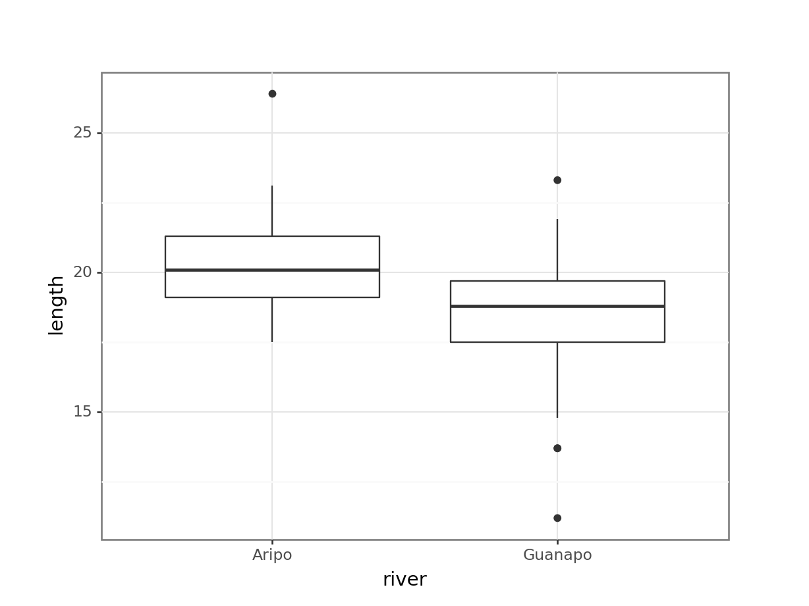
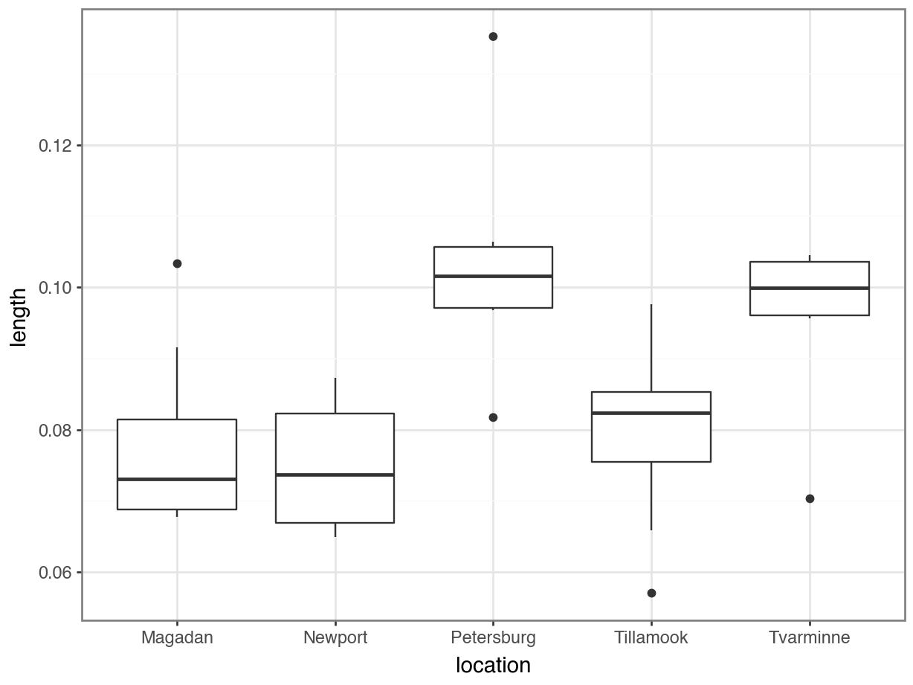
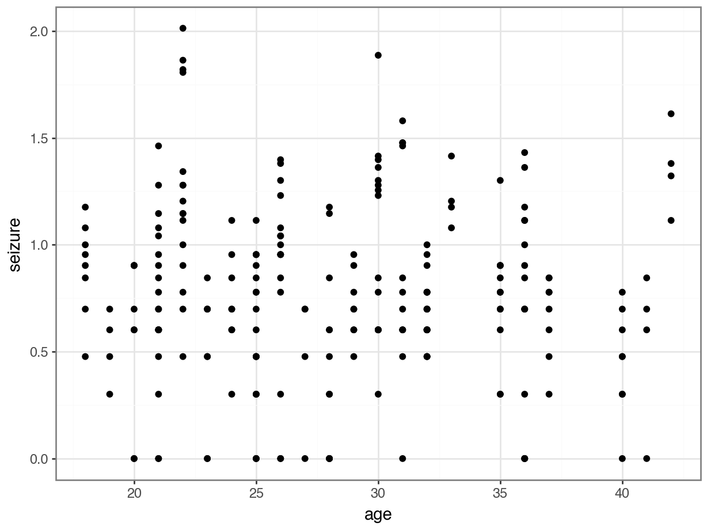

# A library for power analysis
library(pwr)
# A collection of R packages designed for data science
library(tidyverse)
# Converts stats functions to a tidyverse-friendly format
library(rstatix)15 Power analysis
TipLearning outcomes
Questions
- What is power analysis?
- How can I use power analysis to design better experiments?
Objectives
- Be able to perform power analysis programmatically
- Understand the importance of effect size
- Use power, significance level and effect size to optimise your experimental design
15.1 Libraries and functions
NoteClick to expand
15.1.1 Libraries
15.1.2 Functions
15.1.3 Libraries
# A fundamental package for scientific computing in Python
import numpy as np
# A Python data analysis and manipulation tool
import pandas as pd
# Simple yet exhaustive stats functions.
import pingouin as pg
# Python equivalent of `ggplot2`
from plotnine import *
# Statistical models, conducting tests and statistical data exploration
import statsmodels.api as sm
# Convenience interface for specifying models using formula strings and DataFrames
import statsmodels.formula.api as smf
# Custom Python script for diagnostic plots, load from base working directory
from dgplots import dgplots
# Custom Python script for power calculations, load from base working directory
from pwr_f2_test import *15.1.4 Functions
# Custom function to create diagnostic plots
dgplots()
# Custom function to perform power calculations
pwr_f2_test()Note: you can download the pwr_f2_test script here and the dgplots script here.
15.2 Background
All hypothesis tests can be wrong in two ways:
- we can appear to have found a significant result when there really isn’t anything there: a false positive (or Type I error), or
- we can fail to spot a significant result when there really is something interesting going on: a false negative (or Type II error).
The probability of getting a false positive in our analysis is precisely the significance level we use in our analysis. So, in order to reduce the likelihood of getting a false positive we simply reduce the significance level of our test (from 0.05 down to 0.01 say). Easy as that.
Unfortunately, this has unintended consequences (doesn’t everything?). It turns out that reducing the significance level means that we increase the chance of getting false negatives. This should make sense; if we’re increasing the barrier to entry in terms of acceptance then we’ll also accidentally miss out on some of the good stuff.
Power is the capacity of a test to detect significant different results. It is affected by three things:
- the effect size: i.e. how big of a difference do you want to be able to detect, or alternatively what do you consider a meaningful effect/difference to be?
- sample size
- the significance level
In an ideal world we would want to be carrying out highly powerful tests using low significance levels, to both reduce our chance of getting a false positive and maximise our chances of finding a true effect.
Power analysis allows us to design experiments to do just that. Given:
- a desired power (0.8 or 80% is considered pretty good)
- a significance level (0.05 or 5% is our trusty yet arbitrary steed once again)
- an effect size that we would like to detect
We can calculate the amount of data that we need to collect in our experiments. (Woohoo! it looks as if statistics will actually give us an answer at last rather than these perpetual shades-of-grey “maybes”).
The reality is that most of the easily usable power analysis functions all operate under the assumption that the data that you will collect will meet all of the assumptions of your chosen statistical test perfectly. So, for example, if you want to design an experiment investigating the effectiveness of a single drug compared to a placebo (so a simple t-test) and you want to know how many patients to have in each group in order for the test to work, then the standard power analysis techniques will still assume that all of the data that you end up collecting will meet the assumptions of the t-test that you have to carry out (sorry to have raised your hopes ever so slightly 😉).
15.2.1 Effect size
As we shall see the commands for carrying out power analyses are very simple to implement apart from the concept of effect size. This is a tricky issue for most people to get to grips with for two reasons:
- Effect size is related to biological significance rather than statistical significance
- The way in which we specify effect sizes
Note
With respect to the first point a common conversation goes a bit like this:
me: “So you’ve been told to carry out a power analysis, eh? Lucky you. What sort of effect size are you looking for?”
you: “I have no idea what you’re talking about. I want to know if my drug is any better than a placebo. How many patients do I need?”
me: “It depends on how big a difference you think your drug will have compared to the placebo.”
you: “I haven’t carried out my experiment yet, so I have absolutely no idea how big the effect will be!”
me:
(To be honest this would be a relatively well-informed conversation: this is much closer to how things actually go)
The key point about effect sizes and power analyses is that you need to specify an effect size that you would be interested in observing, or one that would be biologically relevant to see. There may well actually be a 0.1% difference in effectiveness of your drug over a placebo but designing an experiment to detect that would require markedly more individuals than an experiment that was trying to detect a 50% difference in effectiveness. In reality there are three places we can get a sense of effect sizes from:
- A pilot study
- Previous literature or theory
- Jacob Cohen
Jacob Cohen was an American statistician who developed a large set of measures for effect sizes (which we will use today). He came up with a rough set of numerical measures for “small”, “medium” and “large” effect sizes that are still in use today. These do come with some caveats though; Jacob was a psychologist and so his assessment of what was a large effect may be somewhat different from yours. They do form a useful starting point however.
There a lot of different ways of specifying effects sizes, but we can split them up into three distinct families of estimates:
- Correlation estimates: these use \(R^2\) as a measure of variance explained by a model (for linear models, anova etc. A large \(R^2\) value would indicate that a lot of variance has been explained by our model and we would expect to see a lot of difference between groups, or a tight cluster of points around a line of best fit. The argument goes that we would need fewer data points to observe such a relationship with confidence. Trying to find a relationship with a low \(R^2\) value would be trickier and would therefore require more data points for an equivalent power.
- Difference between means: these look at how far apart the means of two groups are, measured in units of standard deviations (for t-tests). An effect size of 2 in this case would be interpreted as the two groups having means that were two standard deviations away from each other (quite a big difference), whereas an effect size of 0.2 would be harder to detect and would require more data to pick it up.
- Difference between count data: these I freely admit I have no idea how to intuitively explain them (shock, horror). Mathematically they are based on the chi-squared statistic but that’s as good as I can tell you I’m afraid. They are, however, pretty easy to calculate.
For reference here are some of Cohen’s suggested values for effect sizes for different tests. You’ll probably be surprised by how small some of these are.
| Test | Small | Medium | Large |
|---|---|---|---|
| t-tests | 0.2 | 0.5 | 0.8 |
| anova | 0.1 | 0.25 | 0.4 |
| linear models | 0.02 | 0.15 | 0.35 |
| chi-squared | 0.1 | 0.3 | 0.5 |
We will look at how to carry out power analyses and estimate effect sizes in this section.
15.3 Power analysis t-test
The first example we’ll look at is how to perform a power analysis on two groups of data.
Let’s assume that we want to design an experiment to determine whether there is a difference in the mean price of what male and female students pay at a cafe. How many male and female students would we need to observe in order to detect a “medium” effect size with 80% power and a significance level of 0.05?
We first need to think about which test we would use to analyse the data. Here we would have two groups of continuous response. Clearly a t-test.
15.3.1 Determine effect size
The first thing we need to do is figure out what a “medium” effect size is. In absence of any further information we refer back to Cohen’s effect sizes.
We’re using the pwr library, so make sure that you have installed and loaded it with the following commands:
# install pwr package if needed
install.packages("pwr")
# load the pwr package
library(pwr)We can get Cohen’s effect size using the cohen.ES() function (ES stands for Effect Size):
cohen.ES(test = "t", size = "medium")
Conventional effect size from Cohen (1982)
test = t
size = medium
effect.size = 0.5This function just returns the default conventional values for effect sizes as determined by Jacob Cohen back in the day. It just saves us scrolling back up the page to look at the table I provided. It only takes two arguments:
- test which is one of
- “t”, for t-tests,
- “anova” for anova,
- “f2” for linear models
- “chisq” for chi-squared test
- size, which is just one of “small”, “medium” or “large”.
The bit we want is on the bottom line; we apparently want an effect size of 0.5.
Unlike in R, Cohen’s effect sizes are not available through a package (that I am aware of). So in this case we’re referring back to the effect size table we saw earlier and define “medium” as 0.5.
For this sort of study effect size is measured in terms of Cohen’s d statistic. This is simply a measure of how different the means of the two groups are expressed in terms of the number of standard deviations they are apart from each other. So, in this case we’re looking to detect two means that are 0.5 standard deviations away from each other. In a minute we’ll look at what this means for real data.
15.3.2 Calculating sample sizes
We do this as follows:
pwr.t.test(d = 0.5, sig.level = 0.05, power = 0.8,
type = "two.sample", alternative = "two.sided")
Two-sample t test power calculation
n = 63.76561
d = 0.5
sig.level = 0.05
power = 0.8
alternative = two.sided
NOTE: n is number in *each* groupThe first line is what we’re looking for n = 63.76 tells that we need 64 (rounding up) students in each group (so 128 in total) in order to carry out this study with sufficient power. The other lines should be self-explanatory (well they should be by this stage; if you need me to tell you that the function is just returning the values that you’ve just typed in then you have bigger problems to worry about).
The pwr.t.test() function has six arguments. Two of them specify what sort of t-test you’ll be carrying out * type; which describes the type of t-test you will eventually be carrying out (one of two.sample, one.sample or paired), and * alternative; which describes the type of alternative hypothesis you want to test (one of two.sided, less or greater)
The other four arguments are what is used in the power analysis:
d; this is the effect size, a single number calculated using Cohen’s d statistic.sig.level; this is the significance levelpower; is the powern; this is the number of observations per sample.
We do this with the TTestIndPower() function from statsmodels.stats.power:
from statsmodels.stats.power import TTestIndPower
pwr = TTestIndPower()
pwr.solve_power(effect_size = 0.5,
alpha = 0.05,
power = 0.8)63.76561058785405The output n = 63.76 tells that we need 64 (rounding up) students in each group (so 128 in total) in order to carry out this study with sufficient power.
The TTestIndPower() function uses the four arguments that are are used in the power analysis:
effect_size; this is the effect size, a single number calculated using Cohen’s d statistic.alpha; this is the significance level (default is0.05)power; is the powern; this is the number of observations per sample.
The function works by allowing you to specify any three of these four arguments and the function works out the fourth. In the example above we have used the test in the standard fashion by specifying power, significance and desired effect size and getting the function to tell us the necessary sample size.
15.3.3 Calculating effect sizes
We can use the function to answer a different question:
If I know in advance that I can only observe 30 students per group, what is the effect size that I should be able to observe with 80% power at a 5% significance level?
Let’s see how we do this:
pwr.t.test(n = 30, sig.level = 0.05, power = 0.8,
type = "two.sample", alternative = "two.sided")
Two-sample t test power calculation
n = 30
d = 0.7356292
sig.level = 0.05
power = 0.8
alternative = two.sided
NOTE: n is number in *each* grouppwr = TTestIndPower()
pwr.solve_power(
effect_size = None, # solving for d
nobs1 = 30, # sample size per group
alpha = 0.05,
power = 0.80,
alternative = "two-sided"
)0.7356198334313553We get the effect size and we can see that an experiment with this many people would only be expected to detect a difference in means of d = 0.74 standard deviations. Is this good or bad? Well, it depends on the natural variation of your data; if your data is really noisy then it will have a large variation and a large standard deviation which will mean that 0.74 standard deviations might actually be quite a big difference between your groups. If on the other hand your data doesn’t vary very much, then 0.74 standard deviations might actually be a really small number and this test could pick up even quite small differences in mean.
15.4 Power analysis on data
In both of the previous two examples we were a little bit context-free in terms of effect size. Let’s look at how we can use a pilot study with real data to calculate effect sizes and perform a power analysis to inform a future study.
Let’s look again at the fishlength data we saw in the first practical relating to the lengths of fish from two separate rivers. This is saved as data/CS1-twosample.csv.
# read in the data
fishlength <- read_csv("data/CS1-twosample.csv")
# visualise the data
fishlength %>%
ggplot(aes(x = river, y = length)) +
geom_boxplot()
From the plot we can see that the groups appear to have different means. This difference is significant, as per a two-sample t-test:
# perform t-test
t.test(length ~ river,
data = fishlength,
var.equal = TRUE)
Two Sample t-test
data: length by river
t = 3.8433, df = 66, p-value = 0.0002754
alternative hypothesis: true difference in means between group Aripo and group Guanapo is not equal to 0
95 percent confidence interval:
0.9774482 3.0909868
sample estimates:
mean in group Aripo mean in group Guanapo
20.33077 18.29655 # read in the data
fishlength_py = pd.read_csv("data/CS1-twosample.csv")
# visualise the data
p = (ggplot(fishlength_py, aes(x = "river", y = "length")) +
geom_boxplot())
p.show()
From the plot we can see that the groups appear to have different means. This difference is significant, as per a two-sample t-test.
The ttest() function in pingouin needs two vectors as input, so we split the data as follows:
aripo = fishlength_py.query('river == "Aripo"')["length"]
guanapo = fishlength_py.query('river == "Guanapo"')["length"]Next, we perform the t-test. We specify that the variance are equal by setting correction = False. We also transpose() the data, so we can actually see the entire output.
pg.ttest(aripo, guanapo,
correction = False).transpose() T-test
T 3.843267
dof 66
alternative two-sided
p-val 0.000275
CI95% [0.98, 3.09]
cohen-d 0.942375
BF10 92.191
power 0.966135Can we use this information to design a more efficient experiment? One that we would be confident was powerful enough to pick up a difference in means as big as was observed in this study but with fewer observations?
Let’s first work out exactly what the effect size of this previous study really was by estimating Cohen’s d using this data.
To this, we use the cohens_d function from the rstatix package:
cohens_d(length ~ river,
var.equal = TRUE,
data = fishlength)# A tibble: 1 × 7
.y. group1 group2 effsize n1 n2 magnitude
* <chr> <chr> <chr> <dbl> <int> <int> <ord>
1 length Aripo Guanapo 0.942 39 29 large The cohens_d() function calculates the effect size using the formula of the test. The effsize column contains the information that we want, in this case 0.94 .
We can now actually answer our question and see how many fish we really need to catch in the future:
pwr.t.test(d = 0.94, power = 0.8, sig.level = 0.05,
type = "two.sample", alternative = "two.sided")
Two-sample t test power calculation
n = 18.77618
d = 0.94
sig.level = 0.05
power = 0.8
alternative = two.sided
NOTE: n is number in *each* groupTo do this, we use the compute_effsize() function from pingouin. This takes two vectors as input, so we use the aripo and guanapo objects we created earlier:
pg.compute_effsize(aripo, guanapo,
paired = False,
eftype = "cohen")np.float64(0.9423748389254938)Note: the compute_effsize() function is able to compute various effect sizes, but we’re specifying Cohen’s d here.
So, the Cohen’s d value for these data are d = 0.94 .
We can now actually answer our question and see how many fish we really need to catch in the future:
pwr = TTestIndPower()
pwr.solve_power(
effect_size = 0.94,
alpha = 0.05,
power = 0.80,
alternative = "two-sided"
)18.776177324855From this we can see that any future experiments would really only need to use 19 fish for each group (we always round this number up, so no fish will be harmed during the experiment…) if we wanted to be confident of detecting the difference we observed in the previous study.
This approach can also be used when the pilot study showed a smaller effect size that wasn’t observed to be significant (indeed arguably, a pilot study shouldn’t really concern itself with significance but should only really be used as a way of assessing potential effect sizes which can then be used in a follow-up study).
15.5 Linear model power calculations
Thankfully the ideas we’ve covered in the t-test section should see us in good stead going forward and I can stop writing everything out in such excruciating detail (I do have other things to do you know…).
Let’s read in data/CS2-lobsters.csv. This data set was used in an earlier practical and describes the effect of three different food sources on lobster weight .
As a quick reminder we’ll also plot the data and perform an ANOVA:
# read in the data
lobsters <- read_csv("data/CS2-lobsters.csv")# visualise the data
ggplot(lobsters,
aes(x = diet, y = weight)) +
geom_boxplot()
# define the linear model
lm_lobster <- lm(weight ~ diet,
data = lobsters)
# perform ANOVA on model
anova(lm_lobster)Analysis of Variance Table
Response: weight
Df Sum Sq Mean Sq F value Pr(>F)
diet 2 1567.2 783.61 1.6432 0.2263
Residuals 15 7153.1 476.87 # read in the data
lobsters_py = pd.read_csv("data/CS2-lobsters.csv")# visualise the data
p = (ggplot(lobsters_py, aes(x = "diet",
y = "weight")) +
geom_boxplot())
p.show()
# create a linear model
model = smf.ols(formula = "weight ~ C(diet)", data = lobsters_py)
# and get the fitted parameters of the model
lm_lobsters_py = model.fit()# perform the anova on the fitted model
sm.stats.anova_lm(lm_lobsters_py) df sum_sq mean_sq F PR(>F)
C(diet) 2.0 1567.229381 783.614690 1.64324 0.226313
Residual 15.0 7153.075619 476.871708 NaN NaN- the box plot shows us that there might well be some differences between groups
- the ANOVA analysis though shows that there isn’t sufficient evidence to support that claim given the insignificant p-value we observe.
So the question we can ask is:
If there really is a difference between the different food sources as big as appears here, how big a sample would we need in order to be able to detect it statistically?
First let’s calculate the observed effect size from this study.
For linear models the effect size is called Cohen’s \(f^2\). We can calculate it easily by using the \(R^2\) value from the model fit and shoving it in the following formula:
\[\begin{equation} f^2 = \frac{R^2}{1-R^2} \end{equation}\]
We find \(R^2\) from the lm_lobster summary. We can either just look at the results (spoiler alert, the \(R^2\) is 0.1797) and add it manually or extract the value with the broom::glance() function.
Either way, we can calculate Cohen’s \(f^2\):
# get the effect size for ANOVA
R2 <- summary(lm_lobster) %>%
glance() %>%
pull(r.squared)
# calculate Cohen's f2
f2 <- R2 / (1 - R2)
f2[1] 0.2190987So now we’ve got Cohen’s \(f^2\).
For linear models the effect size metric we use is called \(\eta^2\), or eta-squared.
The eta-squared value measures the contribution of the individual model terms. This is closely linked to the \(R^2\) value, which measures the total amount of variation that is explained by the entire model.
Since we only have one model term here (diet), the \(R^2\) and \(\eta^2\) values are the same.
We can get the \(R^2\) (0.1797) value from the model as follows:
# get the R2 value
R2 = lm_lobsters_py.rsquaredThere’s one more thing that we need for the power calculation for a linear model; the degrees of freedom.
We have two different degrees of freedom: the numerator degrees of freedom and the denominator degrees of freedom. Here the numerator degrees of freedom is 2. This is the number that we want. It is simply the number of parameters in the model minus 1. In this model there are three parameters for the three groups, so 3 - 1 = 2 (see the math isn’t too bad). The other number is called the denominator degrees of freedom, which in this case is 15. This is actually the number we want the power analysis to calculate as it’s a proxy for the number of observations used in the model, and we’ll see how in a minute.
The degrees of freedom are mentioned at the bottom of the model summary:
summary(lm_lobster)
Call:
lm(formula = weight ~ diet, data = lobsters)
Residuals:
Min 1Q Median 3Q Max
-32.129 -16.155 -4.279 15.195 46.720
Coefficients:
Estimate Std. Error t value Pr(>|t|)
(Intercept) 114.433 8.915 12.836 1.71e-09 ***
dietMussels 21.895 12.149 1.802 0.0916 .
dietPellets 14.047 13.223 1.062 0.3049
---
Signif. codes: 0 '***' 0.001 '**' 0.01 '*' 0.05 '.' 0.1 ' ' 1
Residual standard error: 21.84 on 15 degrees of freedom
Multiple R-squared: 0.1797, Adjusted R-squared: 0.07035
F-statistic: 1.643 on 2 and 15 DF, p-value: 0.2263So, we now want to run a power analysis for this linear model, using the following information:
- power =
0.8 - significance =
0.05 - effect size = 0.219
- numerator DF = 2
We can feed this into the pwr.f2.test() function, where we use
uto represent the numerator DF valuef2to represent Cohen’s \(f^2\) effect size value
pwr.f2.test(u = 2, f2 = 0.219,
sig.level = 0.05, power = 0.8)
Multiple regression power calculation
u = 2
v = 44.12292
f2 = 0.219
sig.level = 0.05
power = 0.8As before most of these numbers are just what you’ve put into the function yourself. The new number is v. This is the denominator degrees of freedom required for the analysis to have sufficient power. Thankfully this number is related to the number of observations that we should use in a straightforward manner:
\(number\:of\:observations = u + v + 1\)
So in our case we would ideally have 48 observations (45 + 2 + 1, remembering to round up) in our experiment.
The most challenging part for using power analyses for linear models is working out what the numerator degrees of freedom should be. The easiest way of thinking about it is to say that it’s the number of parameters in your model, excluding the intercept. If you look back at how we wrote out the linear model equations, then you should be able to see how many non-zero parameters would be expected. For some of the simple cases the table below will help you, but for complex linear models you will need to write out the linear model equation and count parameters (sorry!).
| Test | u |
|---|---|
| one-way ANOVA | no. of groups - 1 |
| simple linear regression | 1 |
| two-way ANOVA with interaction | no. of groups (v1) x no. of groups (v2) - 1 |
| two-way ANOVA without interaction | no. of groups (v1) + no. of groups (v2) - 2 |
| ANCOVA with interaction | 2 x no. of groups – 1 |
| ANCOVA without interaction | no. of groups |
We can use the eta-squared value in the power_anova() function from pingouin.
If we’re trying to figure out the sample size, we need to give it the following information:
eta_squared, the effect size we’re after (we saved this asR2)k, the number of groups (three, in our case)power, the statistical power we’re after, in this case 80%alpha, the significance threshold at which we want to detect it
pg.power_anova(eta_squared = R2, k = 3, power = 0.80, alpha = 0.05)15.701046156535305When we fill in all that information, then we find that we need 15.701 samples per group - rounding up this gives 16. This means that we need a total of \(16 \times 3 = 48\) samples altogether.
There are two questions you might now ask (if you’re still following all of this that is – you’re quite possibly definitely in need of a coffee by now):
- how many observations should go into each group?
- ideally they should be equally distributed (so in this case 16 per group).
- why is this so complicated, why isn’t there just a single function that just does this, and just tells me how many observations I need?
- Very good question – I have no answer to that sorry – sometimes life is just hard.
15.6 R-squared and eta-squared
Like we’ve seen before in the previous sessions, the \(R^2\) value can give us an indication of how much of the variance is explained by our model.
Sometimes you also come across \(\eta^2\). What that does is that it partitions \(R^2\) across the predictors. This means that \(\eta^2\) represents how much variance is explained by each of the predictors. If you have multiple predictors, then you would get multiple values.
In the case where there is one predictor, \(R^2 = \eta^2\).
15.7 Exercises
15.7.1 Power: one-sample
15.8.1 Power: two-sample paired
15.9.1 Mussel muscles
ExerciseExercise 3
Level:
In this exercise we’re going to determine a required sample size, dependent on a calculated effect size. The file data/CS6-shelllength.csv contains information from a pilot study looking at whether the standardised length of the anterior adductor muscle scar in the mussel Mytilus trossulus differs across five locations around the world (well it might be of interest to someone…).
Find the effect size from this study and perform a power calculation (at 0.8 and 0.05 significance level) to determine how many mussel muscles need to be recorded in order to be confident that an effect really exists.
AnswerAnswer
15.10 Answer
Let’s first load in the data and have a look at them.
mussels <- read_csv("data/CS6-shelllength.csv")ggplot(mussels,
aes(x = location,
y = length)) +
geom_boxplot()
mussels_py = pd.read_csv("data/CS6-shelllength.csv")p = (ggplot(mussels_py,
aes(x = "location",
y = "length")) +
geom_boxplot())
p.show()
So we are effectively looking at a one-way ANOVA with five groups. This will be useful to know later.
Now we fit a linear model, and perform our calculations:
# define the model
lm_mussels <- lm(length ~ location,
data = mussels)
# summarise the model
summary(lm_mussels)
Call:
lm(formula = length ~ location, data = mussels)
Residuals:
Min 1Q Median 3Q Max
-0.025400 -0.007956 0.000100 0.007000 0.031757
Coefficients:
Estimate Std. Error t value Pr(>|t|)
(Intercept) 0.078012 0.004454 17.517 < 2e-16 ***
locationNewport -0.003213 0.006298 -0.510 0.61331
locationPetersburg 0.025430 0.006519 3.901 0.00043 ***
locationTillamook 0.002187 0.005975 0.366 0.71656
locationTvarminne 0.017687 0.006803 2.600 0.01370 *
---
Signif. codes: 0 '***' 0.001 '**' 0.01 '*' 0.05 '.' 0.1 ' ' 1
Residual standard error: 0.0126 on 34 degrees of freedom
Multiple R-squared: 0.4559, Adjusted R-squared: 0.3918
F-statistic: 7.121 on 4 and 34 DF, p-value: 0.0002812From this we can see that the R-squared value is 0.4559. We can extract that as follows and then use it to calculate Cohen’s \(f^2\):
# get the effect size for ANOVA
R2 <- summary(lm_mussels) %>%
glance() %>%
pull(r.squared)
# calculate Cohen's f2
f2 <- R2 / (1 - R2)f2[1] 0.837767Now, our model has 5 parameters (because we have 5 groups) and so the numerator degrees of freedom will be 4 \((5 - 1 = 4)\). This means that we can now carry our our power analysis:
pwr.f2.test(u = 4, f2 = 0.837767,
sig.level = 0.05 , power = 0.8)
Multiple regression power calculation
u = 4
v = 14.62396
f2 = 0.837767
sig.level = 0.05
power = 0.8This tells us that the denominator degrees of freedom should be 15 (14.62 rounded up), and this means that we would only need 20 observations in total across all five groups to detect this effect size (Remember: number of observations = numerator d.f. + denominator d.f. + 1)
# create a linear model
model = smf.ols(formula = "length ~ C(location)", data = mussels_py)
# and get the fitted parameters of the model
lm_mussels_py = model.fit()# perform the anova on the fitted model
sm.stats.anova_lm(lm_mussels_py) df sum_sq mean_sq F PR(>F)
C(location) 4.0 0.004520 0.001130 7.121019 0.000281
Residual 34.0 0.005395 0.000159 NaN NaNSince we only have one model term here (location), the \(R^2\) and \(\eta^2\) values are the same.
We can get the \(R^2\) (0.4559) value from the model as follows:
# get the R2 value
R2 = lm_mussels_py.rsquaredWe can now calculate the number of required samples.
We use the following values:
eta_squared=R2k= 5 (we have five groups)power= 0.80alpha= 0.05 (our significance threshold)
pg.power_anova(eta_squared = R2,
k = 5, power = 0.80, alpha = 0.05)3.924794633956814This means we need 4 samples per group, so 20 in total (\(4 \times 5\)).
15.10.1 Power and effect
ExerciseExercise 4
Level:
The file /data/CS6-epilepsy1.csv contains information on the ages and rates of seizures of 236 patients undertaking a clinical trial.
- Analyse the data using a linear model and calculate the effect size.
- If there would be a relationship that large between age and seizure rate how big a study would be needed to observe the effect with a 90% power?
AnswerAnswer
15.11 Answer
Let’s first load in the data and have a look at them.
Let’s load in the data:
epilepsy <- read_csv("data/CS6-epilepsy1.csv")Rows: 236 Columns: 2
── Column specification ────────────────────────────────────────────────────────
Delimiter: ","
dbl (2): age, seizure
ℹ Use `spec()` to retrieve the full column specification for this data.
ℹ Specify the column types or set `show_col_types = FALSE` to quiet this message.Let’s just have a quick look at the data to see what we’re dealing with:
ggplot(data = epilepsy,
mapping = aes(x = age,
y = seizure)) +
geom_point()
Let’s load in the data:
epilepsy_py = pd.read_csv("data/CS6-epilepsy1.csv")Let’s just have a quick look at the data to see what we’re dealing with:
p = (ggplot(epilepsy_py, aes(x = "age",
y = "seizure")) +
geom_point())
p.show()
So we are effectively looking at a simple linear regression here.
Now we fit a linear model and determine the number of samples for the observed effect size at 90% power:
# define the model
lm_epilepsy <- lm(seizure ~ age,
data = epilepsy)
# summarise the model
summary(lm_epilepsy)
Call:
lm(formula = seizure ~ age, data = epilepsy)
Residuals:
Min 1Q Median 3Q Max
-0.77513 -0.19585 -0.04333 0.22288 1.24168
Coefficients:
Estimate Std. Error t value Pr(>|t|)
(Intercept) 0.814935 0.124857 6.527 4.12e-10 ***
age -0.001990 0.004303 -0.463 0.644
---
Signif. codes: 0 '***' 0.001 '**' 0.01 '*' 0.05 '.' 0.1 ' ' 1
Residual standard error: 0.413 on 234 degrees of freedom
Multiple R-squared: 0.0009134, Adjusted R-squared: -0.003356
F-statistic: 0.2139 on 1 and 234 DF, p-value: 0.6441From this we get that the \(R^2\) value is 9.134^{-4} (which is tiny!) and we can use this to calculate Cohen’s \(f^2\) value using the formula in the notes:
R2 <- lm_epilepsy %>%
glance() %>%
pull(r.squared)
f2 <- R2 / (1 - R2)
f2[1] 0.0009142378This effect size is absolutely tiny. If we really wanted to design an experiment to pick up an effect size this small then we would expect that we’ll need 1000s of participants.
Now, our model has 2 parameters (an intercept and a slope) and so the numerator degrees of freedom (u) will be 1 (2 - 1 = 1!). This means that we can now carry our our power analysis:
pwr.f2.test(u = 1, f2 = f2,
sig.level = 0.05 , power = 0.9)
Multiple regression power calculation
u = 1
v = 11493.01
f2 = 0.0009142378
sig.level = 0.05
power = 0.9This tells us that the denominator degrees of freedom (v) should be 1.1494^{4} (rounded up to the nearest number), and this means that we would need 11496 participants to detect this effect size (Remember: number of observations = numerator d.f. (u) + denominator d.f. (v) + 1).
# create a linear model
model = smf.ols(formula = "seizure ~ age", data = epilepsy_py)
# and get the fitted parameters of the model
lm_epilepsy_py = model.fit()Since we only have one model term here (age), the \(R^2\) and \(\eta^2\) values are the same.
We can get the \(R^2\) value from the model as follows:
# get the R2 value
R2 = lm_epilepsy_py.rsquared
R2np.float64(0.0009134027561266134)This is a tiny effect size! In order to detect this, we would need a hell of a lot of samples.
There is no straightforward way (that I currently know of) to calculate sample sizes in Python for a linear model with a continuous predictor. We can use an external script that is based on the pwr.f2.test() function in R - this uses a couple of different metrics to calculate the sample size (or effect size, power or significance threshold - depending on which values are given).
This takes the following arguments:
f2, Cohen’s \(f^2\) which is calculated as \(f^2 = \frac{R^2}{1-R^2}\)u, numerator degrees of freedom. This is the number of parameters in the model minus 1v, denominator degrees of freedom. This is the number of observations - number of parameterssig_level, significance levelpower, desired power of the test
First, we load the pwr_f2_test() function:
from pwr_f2_test import *Next, we calculated f2:
f2 = R2 / (1 - R2)pwr_f2_test(u = 1, f2 = f2, sig_level = 0.05 , power = 0.9)Power analysis results:
u is: 1
v is: 11493.013062478689
f2 is: 0.00091423782347433
sig_level is: 0.05
power is: 0.9
num_obs is: 11496So we see that the number of observations we need is 11496!
15.11.1 Study size with multiple regression
15.13 Summary
TipKey points
- Power is the capacity of a test to detect significant results and is affected by
- the effect size
- sample size
- the significance level
- Power analysis optimises the trade-off between power, significance level and the desired effect size that we would like to detect